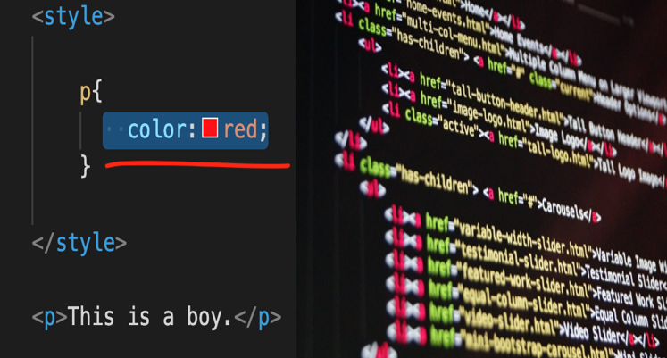
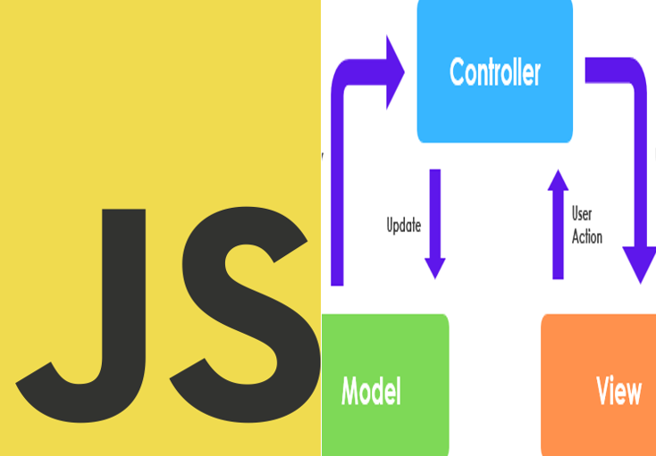
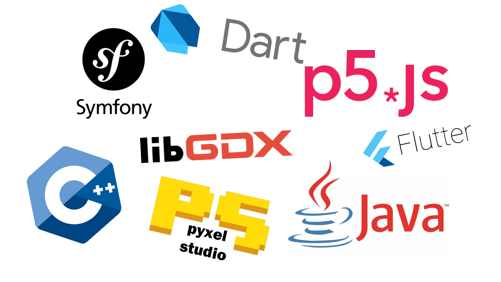
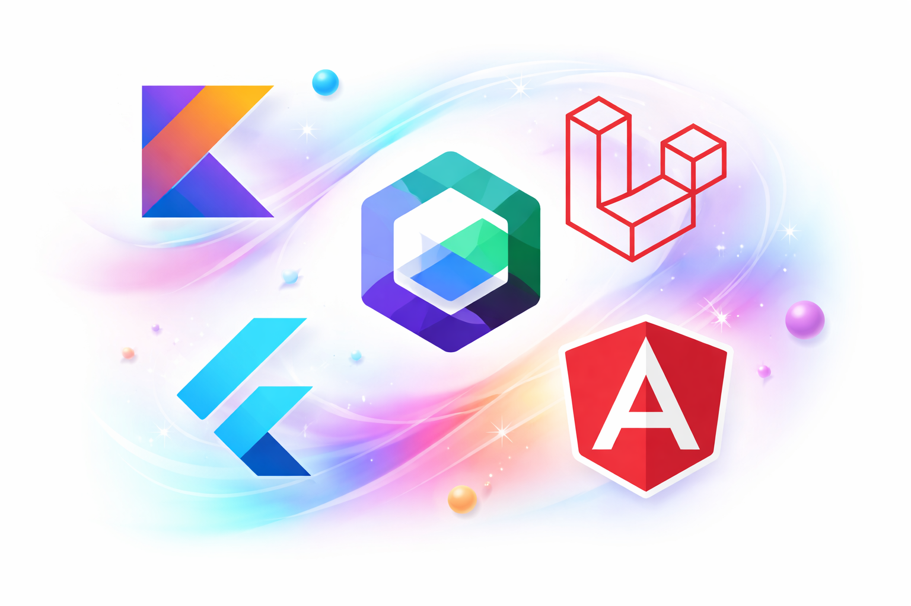

Mon parcours dans l’informatique a débuté avec l’obtention
d’un baccalauréat professionnel Systèmes Numériques, option
Réseaux Informatiques et Systèmes Communicants (RISC).
Cette formation m’a permis d’acquérir de solides bases en réseau,
en maintenance et en infrastructure informatique.
J’ai ensuite poursuivi mes études en BTS Services Informatiques aux
Organisations (SIO), où j’ai développé mes compétences en développement
et en programmation.
MON PARCOURS
Durant la première année, j’ai découvert plusieurs langages fondamentaux
du développement web. J’ai commencé par HTML, qui m’a permis de créer
mes premières pages web statiques. J’ai ensuite appris CSS,
afin d’améliorer l’apparence et le design de mes interfaces.

Par la suite, j’ai intégré JavaScript, ce qui m’a permis de
rendre mes pages dynamiques et interactives. J’ai également découvert
les bases des bases de données ainsi que le développement côté serveur
avec PHP, en utilisant notamment le modèle MVC.

En parallèle, j’ai travaillé avec Python,
ce qui m’a permis de renforcer mes compétences en algorithmique
et en résolution de problèmes.
À la fin de la première année et tout au long de la seconde,
j’ai élargi mes connaissances en explorant différents frameworks
et en découvrant de nouveaux langages de programmation.

Aujourd’hui, je poursuis mon parcours en Licence professionnelle
Métiers de l’informatique, où je continue à approfondir mes compétences
techniques à travers l’utilisation de technologies modernes telles que Laravel,
Kotlin, Jetpack Compose, Flutter, Angular et Java.

Vous trouverez ci-dessous une sélection de vidéos présentant
mes projets précédents :